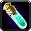
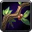
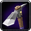
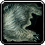

Across the new Khaz Algar continent, you'll find profession treasures that grant +3 Profession Knowledge for your professions. This guide provides a complete overview of all The War Within Profession Knowledge Treasure Locations currently available.
TomTom Addon
While it's not mandatory, I highly recommend using the TomTom addon to make collecting these treasures much easier. TomTom is a super helpful addon that simplifies finding NPCs or objects when coordinates are provided, which you'll often see in my guides and elsewhere.
You can download TomTom from cursforge, or if you use the curseforge app just install it inside the app.
How to Use TomTom Addon
Once you've downloaded and installed the TomTom addon, you can easily use the /ttpaste command in-game to open a window where you can paste the list of "/way" commands listed under each profession.
Here's how to do it step by step:
- Copy the list of "/way" commands from the guide for your chosen profession.
- Switch back to WoW and type
/ttpasteinto the chat. Make sure there’s no space before it, and include the/. - Paste the list of "/way" commands into the window.
- Press the "Paste" button at the bottom of the window.
- Now, you'll see little green dots on your world map, indicating the treasure locations. There will be two for each zone.
If this doesn't work for you, you can also copy and paste the lines one by one into your chat without using the "ttpaste" command. Like this:
/way #2339 32.4, 60.3 Earthen Iron Powder (Alchemy)
Treasure Checks
You can use the treasure check commands in each section to see if you've already looted an item. Simply paste the commands into the same /ttpaste window, or enter them one by one in the chat. If the command returns 'true,' it means you've already collected that treasure.
Important Notes
Minimap
These treasures will show up as Treasure icons on your minimap when you're nearby, making them easy to find. However, if a treasure is inside a building, it might not always appear on your minimap, so you may need to search around a bit more.
Profession Skill
You must have the profession to be able to see the treasures, but there is no profession skill requirement. You can loot them with just skill 1.
Character Level
You can loot the treasures at a lower level; you don't need to be level 80.

Alchemy Knowledge TreasuresWowhead links
| Treasure Name | Coordinates | Zone |
|---|---|---|
| Earthen Iron Powder | 32.4, 60.3 | Dornogal |
| Metal Dornogal Frame | 57.6, 61.7 | Isle of Dorn |
| Reinforced Beaker | 42.1, 24.1 | Ringing Depths |
| Engraved Stirring Rod | 64.9, 61.7 | Ringing Depths |
| Chemist's Purified Water | 42.6, 55.0 | Hallowfall |
| Sanctified Mortar and Pestle | 41.6, 55.8 | Hallowfall |
| Dark Apothecary's Vial | 42.8, 57.2 | Azj-Kahet |
| Nerubian Mixing Salts | 45.4, 13.2 | Azj-Kahet, City of Threads |
TomTom Command
/way #2339 32.4, 60.3 Earthen Iron Powder (Alchemy) /way #2248 57.6, 61.7 Metal Dornogal Frame (Alchemy) /way #2214 42.1, 24.1 Reinforced Beaker (Alchemy) /way #2214 64.9, 61.7 Engraved Stirring Rod (Alchemy) /way #2215 42.6, 55.0 Chemist's Purified Water (Alchemy) /way #2215 41.6, 55.8 Sanctified Mortar and Pestle (Alchemy) /way #2255 42.8, 57.2 Dark Apothecary's Vial (Alchemy) /way #2213 45.4, 13.2 Nerubian Mixing Salts (Alchemy)
Treasure Checks
/run print("Earthen Iron Powder - ", C_QuestLog.IsQuestFlaggedCompleted(83840))
/run print("Metal Dornogal Frame - ", C_QuestLog.IsQuestFlaggedCompleted(83841))
/run print("Reinforced Beaker - ", C_QuestLog.IsQuestFlaggedCompleted(83842))
/run print("Engraved Stirring Rod - ", C_QuestLog.IsQuestFlaggedCompleted(83843))
/run print("Chemist's Purified Water - ", C_QuestLog.IsQuestFlaggedCompleted(83844))
/run print("Sanctified Mortar and Pestle - ", C_QuestLog.IsQuestFlaggedCompleted(83845))
/run print("Dark Apothecary's Vial - ", C_QuestLog.IsQuestFlaggedCompleted(83847))
/run print("Nerubian Mixing Salts - ", C_QuestLog.IsQuestFlaggedCompleted(83846))
 Blacksmithing Knowledge Treasures
Blacksmithing Knowledge Treasures
Wowhead links
| Treasure Name | Coordinates | Zone |
|---|---|---|
| Dornogal Hammer | 47.6, 26.2 | Dornogal |
| Ancient Earthen Anvil | 59.8, 61.8 | Isle of Dorn |
| Earthen Chisels | 60.5, 53.7 | Ringing Depths |
| Ringing Hammer Vise | 47.6, 33.1 | Ringing Depths |
| Holy Flame Forge | 47.5, 61.1 | Hallowfall |
| Radiant Tongs | 44.0, 55.6 | Hallowfall |
| Spiderling's Wire Brush | 52.9, 51.2 | Azj-Kahet |
| Nerubian Smith's Kit | 46.5, 22.8 | Azj-Kahet, City of Threads |
TomTom Command
/way #2339 47.6, 26.2 Dornogal Hammer (Blacksmithing) /way #2248 59.8, 61.8 Ancient Earthen Anvil (Blacksmithing) /way #2214 60.5, 53.7 Earthen Chisels (Blacksmithing) /way #2214 47.6, 33.1 Ringing Hammer Vise (Blacksmithing) /way #2215 47.5, 61.1 Holy Flame Forge (Blacksmithing) /way #2215 44.0, 55.6 Radiant Tongs (Blacksmithing) /way #2255 52.9, 51.2 Spiderling's Wire Brush (Blacksmithing) /way #2213 46.5, 22.8 Nerubian Smith's Kit (Blacksmithing)
Treasure Checks
/run print("Dornogal Hammer - ", C_QuestLog.IsQuestFlaggedCompleted(83849))
/run print("Ancient Earthen Anvil - ", C_QuestLog.IsQuestFlaggedCompleted(83848))
/run print("Earthen Chisels - ", C_QuestLog.IsQuestFlaggedCompleted(83851))
/run print("Ringing Hammer Vise - ", C_QuestLog.IsQuestFlaggedCompleted(83850))
/run print("Holy Flame Forge - ", C_QuestLog.IsQuestFlaggedCompleted(83852))
/run print("Radiant Tongs - ", C_QuestLog.IsQuestFlaggedCompleted(83853))
/run print("Spiderling's Wire Brush - ", C_QuestLog.IsQuestFlaggedCompleted(83855))
/run print("Nerubian Smith's Kit - ", C_QuestLog.IsQuestFlaggedCompleted(83854))
 Enchanting Knowledge Treasures
Enchanting Knowledge Treasures
Wowhead links
| Treasure Name | Coordinates | Zone |
|---|---|---|
| Silver Dornogal Rod | 58.0, 56.8 | Dornogal |
| Grinded Earthen Gem | 57.6, 61.6 | Isle of Dorn |
| Animated Enchanting Dust | 67.1, 65.9 | Ringing Depths |
| Soot-Coated Orb | 44.5, 22.1 | Ringing Depths |
| Essence of Holy Fire | 40.0, 70.5 | Hallowfall |
| Enchanted Arathi Scroll | 48.6, 64.5 | Hallowfall |
| Void Shard | 57.3, 44.0 | Azj-Kahet |
| Book of Dark Magic | 61.6, 22.1 | Azj-Kahet, City of Threads |
TomTom Command
/way #2339 58.0, 56.8 Silver Dornogal Rod (Enchanting) /way #2248 57.6, 61.6 Grinded Earthen Gem (Enchanting) /way #2214 67.1, 65.9 Animated Enchanting Dust (Enchanting) /way #2214 44.5, 22.1 Soot-Coated Orb (Enchanting) /way #2215 40.0, 70.5 Essence of Holy Fire (Enchanting) /way #2215 48.6, 64.5 Enchanted Arathi Scroll (Enchanting) /way #2255 57.3, 44.0 Void Shard (Enchanting) /way #2213 61.6, 22.1 Book of Dark Magic (Enchanting)
Treasure Checks
/run print("Silver Dornogal Rod - ", C_QuestLog.IsQuestFlaggedCompleted(83859))
/run print("Grinded Earthen Gem - ", C_QuestLog.IsQuestFlaggedCompleted(83856))
/run print("Animated Enchanting Dust - ", C_QuestLog.IsQuestFlaggedCompleted(83861))
/run print("Soot-Coated Orb - ", C_QuestLog.IsQuestFlaggedCompleted(83860))
/run print("Essence of Holy Fire - ", C_QuestLog.IsQuestFlaggedCompleted(83862))
/run print("Enchanted Arathi Scroll - ", C_QuestLog.IsQuestFlaggedCompleted(83863))
/run print("Void Shard - ", C_QuestLog.IsQuestFlaggedCompleted(83865))
/run print("Book of Dark Magic - ", C_QuestLog.IsQuestFlaggedCompleted(83864))
 Engineering Knowledge Treasures
Engineering Knowledge Treasures
Wowhead links
| Treasure Name | Coordinates | Zone |
|---|---|---|
| Dornogal Spectacles | 64.8, 52.8 | Dornogal |
| Rock Engineer's Wrench | 61.3, 69.6 | Isle of Dorn |
| Earthen Construct Blueprints | 64.5, 58.7 | Ringing Depths |
| Inert Mining Bomb | 42.6, 27.2 | Ringing Depths |
| Arathi Safety Gloves | 41.5, 49.0 | Hallowfall |
| Holy Firework Dud | 46.3, 61.3 | Hallowfall |
| Puppeted Mechanical Spider | 56.8, 38.6 | Azj-Kahet |
| Emptied Venom Canister | 63.0, 11.2 | Azj-Kahet, City of Threads |
TomTom Command
/way #2339 64.8, 52.8 Dornogal Spectacles (Engineering) /way #2248 61.3, 69.6 Rock Engineer's Wrench (Engineering) /way #2214 64.5, 58.7 Earthen Construct Blueprints (Engineering) /way #2214 42.6, 27.2 Inert Mining Bomb (Engineering) /way #2215 41.5, 49.0 Arathi Safety Gloves (Engineering) /way #2215 46.3, 61.3 Holy Firework Dud (Engineering) /way #2255 56.8, 38.6 Puppeted Mechanical Spider (Engineering) /way #2213 63.0, 11.2 Emptied Venom Canister (Engineering)
Treasure Checks
/run print("Dornogal Spectacles - ", C_QuestLog.IsQuestFlaggedCompleted(83867))
/run print("Rock Engineer's Wrench - ", C_QuestLog.IsQuestFlaggedCompleted(83866))
/run print("Earthen Construct Blueprints - ", C_QuestLog.IsQuestFlaggedCompleted(83869))
/run print("Inert Mining Bomb - ", C_QuestLog.IsQuestFlaggedCompleted(83868))
/run print("Arathi Safety Gloves - ", C_QuestLog.IsQuestFlaggedCompleted(83871))
/run print("Holy Firework Dud - ", C_QuestLog.IsQuestFlaggedCompleted(83870))
/run print("Puppeted Mechanical Spider - ", C_QuestLog.IsQuestFlaggedCompleted(83872))
/run print("Emptied Venom Canister - ", C_QuestLog.IsQuestFlaggedCompleted(83873))
 Inscription Knowledge Treasures
Inscription Knowledge Treasures
Wowhead links
| Treasure Name | Coordinates | Zone |
|---|---|---|
| Dornogal Scribe's Quill | 57.2, 46.8 | Dornogal |
| Historian's Dip Pen | 55.9, 60.0 | Isle of Dorn |
| Runic Scroll | 48.5, 34.2 | Ringing Depths |
| Blue Earthen Pigment | 62.4, 58.0 | Ringing Depths |
| Calligrapher's Chiselled Marker | 42.8, 49.0 | Hallowfall |
| Informant's Fountain Pen | 43.2, 58.9 | Hallowfall |
| Nerubian Texts | 55.8, 43.9 | Azj-Kahet |
| Venomancer's Ink Well | 50.1, 30.7 | Azj-Kahet, City of Threads |
TomTom Command
/way #2339 57.2, 46.8 Dornogal Scribe's Quill (Inscription) /way #2248 55.9, 60.0 Historian's Dip Pen (Inscription) /way #2214 48.5, 34.2 Runic Scroll (Inscription) /way #2214 62.4, 58.0 Blue Earthen Pigment (Inscription) /way #2215 42.8, 49.0 Calligrapher's Chiseled Marker (Inscription) /way #2215 43.2, 58.9 Informant's Fountain Pen (Inscription) /way #2255 55.8, 43.9 Nerubian Texts (Inscription) /way #2213 50.1, 30.7 Venomancer's Ink Well (Inscription)
Treasure Checks
/run print("Dornogal Scribe's Quill - ", C_QuestLog.IsQuestFlaggedCompleted(83882))
/run print("Historian's Dip Pen - ", C_QuestLog.IsQuestFlaggedCompleted(83883))
/run print("Runic Scroll - ", C_QuestLog.IsQuestFlaggedCompleted(83884))
/run print("Blue Earthen Pigment - ", C_QuestLog.IsQuestFlaggedCompleted(83885))
/run print("Calligrapher's Chiseled Marker - ", C_QuestLog.IsQuestFlaggedCompleted(83887))
/run print("Informant's Fountain Pen - ", C_QuestLog.IsQuestFlaggedCompleted(83886))
/run print("Nerubian Texts - ", C_QuestLog.IsQuestFlaggedCompleted(83888))
/run print("Venomancer's Ink Well - ", C_QuestLog.IsQuestFlaggedCompleted(83889))
 Jewelcrafting Knowledge Treasures
Jewelcrafting Knowledge Treasures
Wowhead links
| Treasure Name | Coordinates | Zone |
|---|---|---|
| Earthen Gem Pliers | 34.9 52.3 | Dornogal |
| Gentle Jewel Hammer | 63.5, 66.8 | Isle of Dorn |
| Jeweler's Delicate Drill | 56.9, 54.6 | Ringing Depths |
| Carved Stone File | 48.5, 35.1 | Ringing Depths |
| Librarian's Magnifiers | 44.6, 50.9 | Hallowfall |
| Arathi Sizing Gauges | 47.3, 60.6 | Hallowfall |
| Nerubian Bench Blocks | 56.1, 58.7 | Azj-Kahet |
| Ritual Caster's Crystal | 47.7, 19.3 | Azj-Kahet, City of Threads |
TomTom Command
/way #2339 34.9 52.3 Earthen Gem Pliers (Jewelcrafting) /way #2248 63.5, 66.8 Gentle Jewel Hammer (Jewelcrafting) /way #2214 56.9, 54.6 Jeweler's Delicate Drill (Jewelcrafting) /way #2214 48.5, 35.1 Carved Stone File (Jewelcrafting) /way #2215 44.6, 50.9 Librarian's Magnifiers (Jewelcrafting) /way #2215 47.3, 60.6 Arathi Sizing Gauges (Jewelcrafting) /way #2255 56.1, 58.7 Nerubian Bench Blocks (Jewelcrafting) /way #2213 47.7, 19.3 Ritual Caster's Crystal (Jewelcrafting)
Treasure Checks
/run print("Earthen Gem Pliers - ", C_QuestLog.IsQuestFlaggedCompleted(83891))
/run print("Gentle Jewel Hammer - ", C_QuestLog.IsQuestFlaggedCompleted(83890))
/run print("Jeweler's Delicate Drill - ", C_QuestLog.IsQuestFlaggedCompleted(83893))
/run print("Carved Stone File - ", C_QuestLog.IsQuestFlaggedCompleted(83892))
/run print("Librarian's Magnifiers - ", C_QuestLog.IsQuestFlaggedCompleted(83895))
/run print("Arathi Sizing Gauges - ", C_QuestLog.IsQuestFlaggedCompleted(83894))
/run print("Nerubian Bench Blocks - ", C_QuestLog.IsQuestFlaggedCompleted(83897))
/run print("Ritual Caster's Crystal - ", C_QuestLog.IsQuestFlaggedCompleted(83896))
 Leatherworking Knowledge Treasures
Leatherworking Knowledge Treasures
Wowhead links
| Treasure Name | Coordinates | Zone |
|---|---|---|
| Earthen Lacing Tools | 68.2, 23.2 | Dornogal |
| Dornogal Craftsman's Flat Knife | 58.6, 30.7 | Isle of Dorn |
| Underground Stropping Compound | 47.0, 34.8 | Ringing Depths |
| Earthen Awl | 64.3, 65.3 | Ringing Depths |
| Arathi Leather Burnisher | 41.5, 57.8 | Hallowfall |
| Arathi Beveler Set | 47.4, 65.1 | Hallowfall |
| Curved Nerubian Skinning Knife | 60.0, 53.9 | Azj-Kahet |
| Nerubian Tanning Mallet | 55.2, 26.8 | Azj-Kahet, City of Threads |
TomTom Command
/way #2339 68.2, 23.2 Earthen Lacing Tools (Leatherworking) /way #2248 58.6, 30.7 Dornogal Craftsman's Flat Knife (Leatherworking) /way #2214 47.0, 34.8 Underground Stropping Compound (Leatherworking) /way #2214 64.3, 65.3 Earthen Awl (Leatherworking) /way #2215 41.5, 57.8 Arathi Leather Burnisher (Leatherworking) /way #2215 47.4, 65.1 Arathi Beveler Set (Leatherworking) /way #2255 60.0, 53.9 Curved Nerubian Skinning Knife (Leatherworking) /way #2213 55.2, 26.8 Nerubian Tanning Mallet (Leatherworking)
Treasure Checks
/run print("Earthen Lacing Tools - ", C_QuestLog.IsQuestFlaggedCompleted(83898))
/run print("Dornogal Craftsman's Flat Knife - ", C_QuestLog.IsQuestFlaggedCompleted(83899))
/run print("Underground Stropping Compound - ", C_QuestLog.IsQuestFlaggedCompleted(83900))
/run print("Earthen Awl - ", C_QuestLog.IsQuestFlaggedCompleted(83901))
/run print("Arathi Leather Burnisher - ", C_QuestLog.IsQuestFlaggedCompleted(83903))
/run print("Arathi Beveler Set - ", C_QuestLog.IsQuestFlaggedCompleted(83902))
/run print("Curved Nerubian Skinning Knife - ", C_QuestLog.IsQuestFlaggedCompleted(83905))
/run print("Nerubian Tanning Mallet - ", C_QuestLog.IsQuestFlaggedCompleted(83904))
 Tailoring Knowledge Treasures
Tailoring Knowledge Treasures
Wowhead links
| Treasure Name | Coordinates | Zone |
|---|---|---|
| Dornogal Seam Ripper | 61.4, 18.4 | Dornogal |
| Earthen Tape Measure | 56.2, 60.9 | Isle of Dorn |
| Runed Earthen Pins | 48.8, 32.8 | Ringing Depths |
| Earthen Stitcher's Snips | 64.2, 60.3 | Ringing Depths |
| Arathi Rotary Cutter | 49.3, 62.3 | Hallowfall |
| Royal Outfitter's Protractor | 40.1, 68.1 | Hallowfall |
| Nerubian Quilt | 53.2, 53.1 | Azj-Kahet |
| Nerubian's Pincushion | 50.2, 16.7 | Azj-Kahet, City of Threads |
TomTom Command
/way #2339 61.4, 18.4 Dornogal Seam Ripper (Tailoring) /way #2248 56.2, 60.9 Earthen Tape Measure (Tailoring) /way #2214 48.8, 32.8 Runed Earthen Pins (Tailoring) /way #2214 64.2, 60.3 Earthen Stitcher's Snips (Tailoring) /way #2215 49.3, 62.3 Arathi Rotary Cutter (Tailoring) /way #2215 40.1, 68.1 Royal Outfitter's Protractor (Tailoring) /way #2255 53.2, 53.1 Nerubian Quilt (Tailoring) /way #2213 50.2, 16.7 Nerubian's Pincushion (Tailoring)
Treasure Checks
/run print("Dornogal Seam Ripper - ", C_QuestLog.IsQuestFlaggedCompleted(83922))
/run print("Earthen Tape Measure - ", C_QuestLog.IsQuestFlaggedCompleted(83923))
/run print("Runed Earthen Pins - ", C_QuestLog.IsQuestFlaggedCompleted(83924))
/run print("Earthen Stitcher's Snips - ", C_QuestLog.IsQuestFlaggedCompleted(83925))
/run print("Arathi Rotary Cutter - ", C_QuestLog.IsQuestFlaggedCompleted(83926))
/run print("Royal Outfitter's Protractor - ", C_QuestLog.IsQuestFlaggedCompleted(83927))
/run print("Nerubian Quilt - ", C_QuestLog.IsQuestFlaggedCompleted(83928))
/run print("Nerubian's Pincushion - ", C_QuestLog.IsQuestFlaggedCompleted(83929))

Herbalism Knowledge TreasuresWowhead links
| Treasure Name | Coordinates | Zone |
|---|---|---|
| Dornogal Gardening Scythe | 59.2, 23.6 | Dornogal |
| Ancient Flower | 57.5, 61.4 | Isle of Dorn |
| Earthen Digging Fork | 48.2, 35.0 | Ringing Depths |
| Fungarian Slicer's Knife | 52.8, 65.8 | Ringing Depths |
| Arathi Garden Trowel | 47.7, 63.3 | Hallowfall |
| Arathi Herb Pruner | 36.0, 55.0 | Hallowfall |
| Tunneler's Shovel | 46.6, 15.9 | Azj-Kahet, City of Threads |
| Web-Entangled Lotus | 54.6, 20.9 | Azj-Kahet, City of Threads |
TomTom Command
/way #2339 59.2, 23.6 Dornogal Gardening Scythe (Herbalism) /way #2248 57.5, 61.4 Ancient Flower (Herbalism) /way #2214 48.2, 35.0 Earthen Digging Fork (Herbalism) /way #2214 52.8, 65.8 Fungarian Slicer's Knife (Herbalism) /way #2215 47.7, 63.3 Arathi Garden Trowel (Herbalism) /way #2215 36.0, 55.0 Arathi Herb Pruner (Herbalism) /way #2213 46.6, 15.9 Tunneler's Shovel (Herbalism) /way #2213 54.6, 20.9 Web-Entangled Lotus (Herbalism)
Treasure Checks
/run print("Doronogal Gardening Scythe - ", C_QuestLog.IsQuestFlaggedCompleted(83875))
/run print("Ancient Flower - ", C_QuestLog.IsQuestFlaggedCompleted(83874))
/run print("Earthen Digging Fork - ", C_QuestLog.IsQuestFlaggedCompleted(83876))
/run print("Fungarian Slicer's Knife - ", C_QuestLog.IsQuestFlaggedCompleted(83877))
/run print("Arathi Garden Trowel - ", C_QuestLog.IsQuestFlaggedCompleted(83879))
/run print("Arathi Herb Pruner - ", C_QuestLog.IsQuestFlaggedCompleted(83878))
/run print("Tunneler's Shovel - ", C_QuestLog.IsQuestFlaggedCompleted(83881))
/run print("Web-Entangled Lotus - ", C_QuestLog.IsQuestFlaggedCompleted(83880))

Mining Knowledge TreasuresWowhead links
| Treasure Name | Coordinates | Zone |
|---|---|---|
| Dornogal Chisel | 36.7, 79.2 | Dornogal |
| Earthen Miner's Gavel | 58.1, 62.0 | Isle of Dorn |
| Regenerating Ore | 66.2, 66.3 | Ringing Depths |
| Earthen Excavator's Shovel | 49.4, 27.7 | Ringing Depths |
| Arathi Precision Drill | 46.0, 64.4 | Hallowfall |
| Devout Archaeologist's Excavator | 43.0, 56.7 | Hallowfall |
| Heavy Spider Crusher | 46.6, 21.5 | Azj-Kahet, City of Threads |
| Nerubian Mining Cart | 48.3, 40.8 | Azj-Kahet, City of Threads |
TomTom Command
/way #2339 36.7, 79.2 Dornogal Chisel (Mining) /way #2248 58.1, 62.0 Earthen Miner's Gavel (Mining) /way #2214 66.2, 66.3 Regenerating Ore (Mining) /way #2214 49.4, 27.7 Earthen Excavator's Shovel (Mining) /way #2215 46.0, 64.4 Arathi Precision Drill (Mining) /way #2215 43.0, 56.7 Devout Archaeologist's Excavator (Mining) /way #2213 46.6, 21.5 Heavy Spider Crusher (Mining) /way #2213 48.3, 40.8 Nerubian Mining Supplies (Mining)
Treasure Checks
/run print("Dornogal Chisel - ", C_QuestLog.IsQuestFlaggedCompleted(83907))
/run print("Earthen Miner's Gavel - ", C_QuestLog.IsQuestFlaggedCompleted(83906))
/run print("Earthen Excavator's Shovel - ", C_QuestLog.IsQuestFlaggedCompleted(83908))
/run print("Regenerating Ore - ", C_QuestLog.IsQuestFlaggedCompleted(83909))
/run print("Arathi Precision Drill - ", C_QuestLog.IsQuestFlaggedCompleted(83910))
/run print("Devout Archaeologist's Excavator - ", C_QuestLog.IsQuestFlaggedCompleted(83911))
/run print("Heavy Spider Crusher - ", C_QuestLog.IsQuestFlaggedCompleted(83912))
/run print("Nerubian Mining Cart - ", C_QuestLog.IsQuestFlaggedCompleted(83913))

Skinning Knowledge TreasuresWowhead links
| Treasure Name | Coordinates | Zone |
|---|---|---|
| Dornogal Carving Knife | 28.8, 51.7 | Dornogal |
| Earthen Worker's Beams | 60.0, 28.0 | Isle of Dorn |
| Artisan's Drawing Knife | 47.2, 28.3 | Ringing Depths |
| Fungarian's Rich Tannin | 65.8, 61.8 | Ringing Depths |
| Arathi Craftsman's Spokeshave | 42.2, 53.7 | Hallowfall |
| Arathi Tanning Agent | 49.3, 62.0 | Hallowfall |
| Carapace Shiner | 56.5, 55.2 | Azj-Kahet |
| Nerubian's Slicking Iron | 44.6, 49.2 | Azj-Kahet, City of Threads |
TomTom Command
/way #2339 28.8, 51.7 Dornogal Carving Knife (Skinning) /way #2248 60.0, 28.0 Earthen Worker's Beams (Skinning) /way #2214 47.2, 28.3 Artisan's Drawing Knife (Skinning) /way #2214 65.8, 61.8 Fungarian's Rich Tannin (Skinning) /way #2215 42.2, 53.7 Arathi Craftsman's Spokeshave (Skinning) /way #2215 49.3, 62.0 Arathi Tanning Agent (Skinning) /way #2255 56.5, 55.2 Carapace Shiner (Skinning) /way #2213 44.6, 49.2 Nerubian's Slicking Iron (Skinning)
Treasure Checks
/run print("Dornogal Carving Knife - ", C_QuestLog.IsQuestFlaggedCompleted(83914))
/run print("Earthen Worker's Beams - ", C_QuestLog.IsQuestFlaggedCompleted(83915))
/run print("Artisan's Drawing Knife - ", C_QuestLog.IsQuestFlaggedCompleted(83916))
/run print("Fungarian's Rich Tannin - ", C_QuestLog.IsQuestFlaggedCompleted(83917))
/run print("Arathi Craftsman's Spokeshave - ", C_QuestLog.IsQuestFlaggedCompleted(83919))
/run print("Arathi Tanning Agent - ", C_QuestLog.IsQuestFlaggedCompleted(83918))
/run print("Carapace Shiner - ", C_QuestLog.IsQuestFlaggedCompleted(83921))
/run print("Nerubian Slicking Iron - ", C_QuestLog.IsQuestFlaggedCompleted(83920))